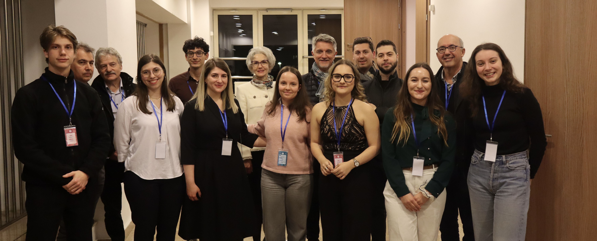
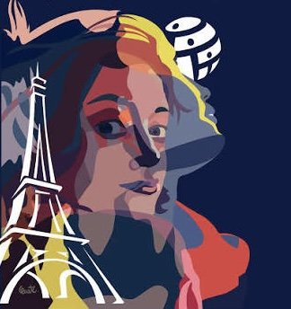

Découvrez les étudiants qui portent Ti'Doc, mais aussi les projets et rencontres qui permettent au congrès de dépasser les frontières de Cluj-Napoca.
Ti'Doc ne se résume pas aux quelques jours du congrès. Le projet repose sur une équipe étudiante engagée, sur des rencontres et sur une volonté de faire évoluer l'événement chaque année.

Découvrez le bureau, les membres fondateurs et les étudiants qui imaginent et organisent les différentes éditions du congrès.
Découvrir l'équipe →
Découvrez la participation de Ti'Doc à WONCA Europe 2026 et la manière dont le projet commence à se faire connaître à l'international.
Découvrir WONCA 2026 →